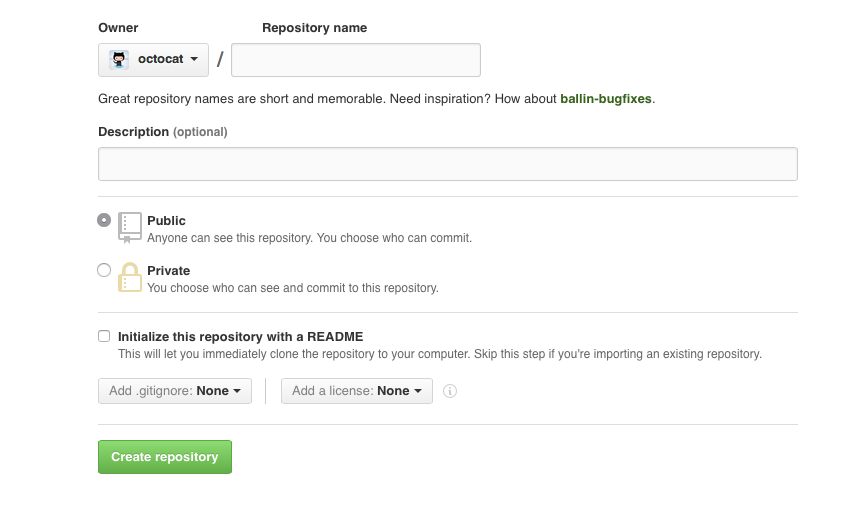

Understanding the legal implications of open source
Sharing your creative work with the world can be an exciting and rewarding experience. It can also mean a bunch of legal things you didn’t know you had to worry about. Thankfully, you don’t have to start from scratch. We’ve got your legal needs covered. (Before you dig in, be sure to read our disclaimer.)
Why do people care so much about the legal side of open source?
Glad you asked! When you make a creative work (such as writing, graphics, or code), that work is under exclusive copyright by default. That is, the law assumes that as the author of your work, you have a say in what others can do with it.
In general, that means nobody else can use, copy, distribute, or modify your work without being at risk of take-downs, shake-downs, or litigation.
Open source is an unusual circumstance, however, because the author expects that others will use, modify, and share the work. But because the legal default is still exclusive copyright, you need a license that explicitly states these permissions.
If you don’t apply an open source license, everybody who contributes to your project also becomes an exclusive copyright holder of their work. That means nobody can use, copy, distribute, or modify their contributions – and that “nobody” includes you.
Finally, your project may have dependencies with license requirements that you weren’t aware of. Your project’s community, or your employer’s policies, may also require your project to use specific open source licenses. We’ll cover these situations below.
Are public GitHub projects open source?
When you create a new project on GitHub, you have the option to make the repository private or public.

Making your GitHub project public is not the same as licensing your project. Public projects are covered by GitHub’s Terms of Service, which allows others to view and fork your project, but your work otherwise comes with no permissions.
If you want others to use, distribute, modify, or contribute back to your project, you need to include an open source license. For example, someone cannot legally use any part of your GitHub project in their code, even if it’s public, unless you explicitly give them the right to do so.
Just give me the TL;DR on what I need to protect my project.
You’re in luck, because today, open source licenses are standardized and easy to use. You can copy-paste an existing license directly into your project.
MIT, Apache 2.0, and GPLv3 are the most popular open source licenses, but there are other options to choose from. You can find the full text of these licenses, and instructions on how to use them, on choosealicense.com.
When you create a new project on GitHub, you’ll be asked to add a license.
Which open source license is appropriate for my project?
If you’re starting from a blank slate, it’s hard to go wrong with the MIT License. It’s short, very easy to understand, and allows anyone to do anything so long as they keep a copy of the license, including your copyright notice. You’ll be able to release the project under a different license if you ever need to.
Otherwise, picking the right open source license for your project depends on your objectives.
Your project very likely has (or will have) dependencies. For example, if you’re open sourcing a Node.js project, you’ll probably use libraries from the Node Package Manager (npm). Each of those libraries you depend on will have its own open source license. If each of their licenses is “permissive” (gives the public permission to use, modify, and share, without any condition for downstream licensing), you can use any license you want. Common permissive licenses include MIT, Apache 2.0, ISC, and BSD.
On the other hand, if any of your dependencies’ licenses are “strong copyleft” (also gives public same permissions, subject to condition of using the same license downstream), then your project will have to use the same license. Common strong copyleft licenses include GPLv2, GPLv3, and AGPLv3.
You may also want to consider the communities you hope will use and contribute to your project:
- Do you want your project to be used as a dependency by other projects? Probably best to use the most popular license in your relevant community. For example, MIT is the most popular license for npm libraries.
- Do you want your project to appeal to large businesses? A large business will likely want an express patent license from all contributors. In this case, Apache 2.0 has you (and them) covered.
- Do you want your project to appeal to contributors who do not want their contributions to be used in closed source software? GPLv3 or (if they also do not wish to contribute to closed source services) AGPLv3 will go over well.
Your company may have specific licensing requirements for its open source projects. For example, it may require a permissive license so that the company can use your project in the company’s closed source product. Or your company may require a strong copyleft license and an additional contributor agreement (see below) so that only your company, and nobody else, can use your project in closed source software. Or your company may have certain needs related to standards, social responsibility, or transparency, any of which could require a particular licensing strategy. Talk to your company’s legal department.
When you create a new project on GitHub, you are given the option to select a license. Including one of the licenses mentioned above will make your GitHub project open source. If you’d like to see other options, check out choosealicense.com to find the right license for your project, even if it isn’t software.
What if I want to change the license of my project?
Most projects never need to change licenses. But occasionally circumstances change.
For example, as your project grows it adds dependencies or users, or your company changes strategies, any of which could require or want a different license. Also, if you neglected to license your project from the start, adding a license is effectively the same as changing licenses. There are three fundamental things to consider when adding or changing your project’s license:
It’s complicated. Determining license compatibility and compliance and who holds copyright can get complicated and confusing very quickly. Switching to a new but compatible license for new releases and contributions is different from relicensing all existing contributions. Involve your legal team at the first hint of any desire to change licenses. Even if you have or can obtain permission from your project’s copyright holders for a license change, consider the impact of the change on your project’s other users and contributors. Think of a license change as a “governance event” for your project that will more likely go smoothly with clear communications and consultation with your project’s stakeholders. All the more reason to choose and use an appropriate license for your project from its inception!
Your project’s existing license. If your project’s existing license is compatible with the license you want to change to, you could just start using the new license. That’s because if license A is compatible with license B, you’ll comply with the terms of A while complying with the terms of B (but not necessarily vice versa). So if you’re currently using a permissive license (e.g., MIT), you could change to a license with more conditions, so long as you retain a copy of the MIT license and any associated copyright notices (i.e., continue to comply with the MIT license’s minimal conditions). But if your current license is not permissive (e.g., copyleft, or you don’t have a license) and you aren’t the sole copyright holder, you couldn’t just change your project’s license to MIT. Essentially, with a permissive license the project’s copyright holders have given permission in advance to change licenses.
Your project’s existing copyright holders. If you’re the sole contributor to your project then either you or your company is the project’s sole copyright holder. You can add or change to whatever license you or your company wants to. Otherwise there may be other copyright holders that you need agreement from in order to change licenses. Who are they? People who have commits in your project is a good place to start. But in some cases copyright will be held by those people’s employers. In some cases people will have only made minimal contributions, but there’s no hard and fast rule that contributions under some number of lines of code are not subject to copyright. What to do? It depends. For a relatively small and young project, it may be feasible to get all existing contributors to agree to a license change in an issue or pull request. For large and long-lived projects, you may have to seek out many contributors and even their heirs. Mozilla took years (2001-2006) to relicense Firefox, Thunderbird, and related software.
Alternatively, you can have contributors agree in advance (via an additional contributor agreement – see below) to certain license changes under certain conditions, beyond those allowed by your existing open source license. This shifts the complexity of changing licenses a bit. You’ll need more help from your lawyers up front, and you’ll still want to clearly communicate with your project’s stakeholders when executing a license change.
Does my project need an additional contributor agreement?
Probably not. For the vast majority of open source projects, an open source license implicitly serves as both the inbound (from contributors) and outbound (to other contributors and users) license. If your project is on GitHub, the GitHub Terms of Service make “inbound=outbound” the explicit default.
An additional contributor agreement – often called a Contributor License Agreement (CLA) – can create administrative work for project maintainers. How much work an agreement adds depends on the project and implementation. A simple agreement might require that contributors confirm, with a click, that they have the rights necessary to contribute under the project open source license. A more complicated agreement might require legal review and sign-off from contributors’ employers.
Also, by adding “paperwork” that some believe is unnecessary, hard to understand, or unfair (when the agreement recipient gets more rights than contributors or the public do via the project’s open source license), an additional contributor agreement may be perceived as unfriendly to the project’s community.
Some situations where you may want to consider an additional contributor agreement for your project include:
- Your lawyers want all contributors to expressly accept (sign, online or offline) contribution terms, perhaps because they feel the open source license itself is not enough (even though it is!). If this is the only concern, a contributor agreement that affirms the project’s open source license should be enough. The jQuery Individual Contributor License Agreement is a good example of a lightweight additional contributor agreement.
- You or your lawyers want developers to represent that each commit they make is authorized. A Developer Certificate of Origin requirement is how many projects achieve this. For example, the Node.js community uses the DCO instead of their prior CLA. A simple option to automate enforcement of the DCO on your repository is the DCO Probot.
- Your project uses an open source license that does not include an express patent grant (such as MIT), and you need a patent grant from all contributors, some of whom may work for companies with large patent portfolios that could be used to target you or the project’s other contributors and users. The Apache Individual Contributor License Agreement is a commonly used additional contributor agreement that has a patent grant mirroring the one found in the Apache License 2.0.
- Your project is under a copyleft license, but you also need to distribute a proprietary version of the project. You’ll need every contributor to assign copyright to you or grant you (but not the public) a permissive license. The MongoDB Contributor Agreement is an example this type of agreement.
- You think your project might need to change licenses over its lifetime and want contributors to agree in advance to such changes.
If you do need to use an additional contributor agreement with your project, consider using an integration such as CLA assistant to minimize contributor distraction.
What does my company’s legal team need to know?
If you’re releasing an open source project as a company employee, first, your legal team should know that you’re open sourcing a project.
For better or worse, consider letting them know even if it’s a personal project. You probably have an “employee IP agreement” with your company that gives them some control of your projects, especially if they are at all related to the company’s business or you use any company resources to develop the project. Your company should easily give you permission, and maybe already has through an employee-friendly IP agreement or a company policy. If not, you can negotiate (for example, explain that your project serves the company’s professional learning and development objectives for you), or avoid working on your project until you find a better company.
If you’re open sourcing a project for your company, then definitely let them know. Your legal team probably already has policies for what open source license (and maybe additional contributor agreement) to use based on the company’s business requirements and expertise around ensuring your project complies with the licenses of its dependencies. If not, you and they are in luck! Your legal team should be eager to work with you to figure this stuff out. Some things to think about:
-
Third party material: Does your project have dependencies created by others or otherwise include or use others’ code? If these are open source, you’ll need to comply with the materials’ open source licenses. That starts with choosing a license that works with the third party open source licenses (see above). If your project modifies or distributes third party open source material, then your legal team will also want to know that you’re meeting other conditions of the third party open source licenses such as retaining copyright notices. If your project uses others’ code that doesn’t have an open source license, you’ll probably have to ask the third party maintainers to add an open source license, and if you can’t get one, stop using their code in your project.
-
Trade secrets: Consider whether there is anything in the project that the company does not want to make available to the general public. If so, you could open source the rest of your project, after extracting the material you want to keep private.
-
Patents: Is your company applying for a patent of which open sourcing your project would constitute public disclosure? Sadly, you might be asked to wait (or maybe the company will reconsider the wisdom of the application). If you’re expecting contributions to your project from employees of companies with large patent portfolios, your legal team may want you to use a license with an express patent grant from contributors (such as Apache 2.0 or GPLv3), or an additional contributor agreement (see above).
-
Trademarks: Double check that your project’s name does not conflict with any existing trademarks. If you use your own company trademarks in the project, check that it does not cause any conflicts. FOSSmarks is a practical guide to understanding trademarks in the context of free and open source projects.
-
Privacy: Does your project collect data on users? “Phone home” to company servers? Your legal team can help you comply with company policies and external regulations.
If you’re releasing your company’s first open source project, the above is more than enough to get through (but don’t worry, most projects shouldn’t raise any major concerns).
Longer term, your legal team can do more to help the company get more from its involvement in open source, and stay safe:
- Employee contribution policies: Consider developing a corporate policy that specifies how your employees contribute to open source projects. A clear policy will reduce confusion among your employees and help them contribute to open source projects in the company’s best interest, whether as part of their jobs or in their free time. A good example is Rackspace’s Model IP and Open Source Contribution Policy.
- What to release: (Almost) everything? If your legal team understands and is invested in your company’s open source strategy, they’ll be best able to help rather than hinder your efforts.
- Compliance: Even if your company doesn’t release any open source projects, it uses others’ open source software. Awareness and process can prevent headaches, product delays, and lawsuits.
- Patents: Your company may wish to join the Open Invention Network, a shared defensive patent pool to protect members’ use of major open source projects, or explore other alternative patent licensing.
- Governance: Especially if and when it makes sense to move a project to a legal entity outside of the company.